前言
大一期间没有办校园卡，宿舍一直靠手机热点上网，网速不稳定、流量受限，还经常断网，使用体验很差。暑假终于办了校园卡，准备认真折腾一下寝室网络，目标是稳定、多功能、可扩展
背景与目标
网络条件
- 学校的宽带采用代拨上网，网速500Mbps
- 需要通过深澜系统登录认证账号后才能使用网络
- 没有公网IP，校外访问需要内网穿透
功能需求
我的需求包括广告过滤、科学上网、Docker 等功能，由于设备较多，我还需要一台 NAS 来实现数据共享。所以All in one符合我的需求
All in one（AIO） 是一种将多台设备功能整合到同一硬件上、各系统相互独立又可同时运行的方案
一般情况使用x86架构的设备作为硬件平台，虚拟机系统来做底层，将软路由、NAS、HTPC等系统安装到同一台物理机中，并且同时运行。对于我这种新手来说，All in one的好处就是能用较低成本体验不同系统的功能，并逐步找到最适合自己的方案
方案规划
硬件配置
目标：能跑满校园网的500兆带宽，且价格不太贵，不浪费性能
最终选择：
- J4125 +i226 四网口小主机
- 120 G 固态、8 G 内存
- 红米 AC2100 作为 AP
总花费 450 元
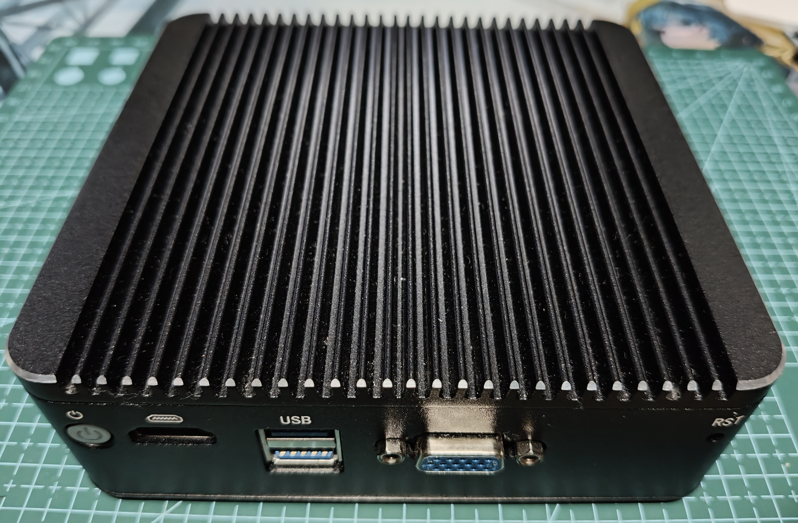
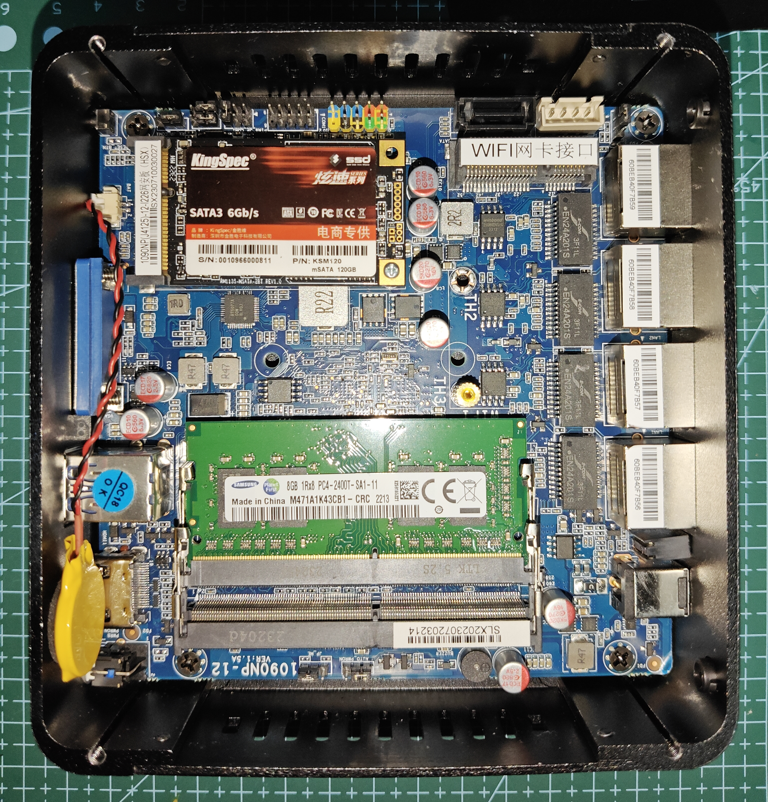
底层虚拟机系统选择
虚拟机分为两种类型：Type 1 和 Type 2。Type 1 虚拟机管理程序（如 Proxmox VE、ESXi）直接运行在硬件之上，没有宿主系统，性能更高、更稳定，常用于服务器或实验环境；Type 2 （如 VirtualBox、VMware Workstation）则依赖已有操作系统运行，启动方便但性能略低，更适合个人电脑或临时测试。常用的all in one虚拟机系统有PVE、ESXi、Windows Server + Hyper-v
ESXi 属于企业级虚拟化系统，稳定且上手难度低。系统是官方定制的 Linux，只运行 VMware 自家的虚拟化层，不允许太多修改，虚拟机性能损耗较低，适合需要长期稳定运行的环境
PVE（Proxmox VE） 基于 Debian 的开源虚拟化平台，底层是 KVM。功能和玩法多，硬件兼容性强，快照与LXC 容器等功能对初学者很友好。适合喜欢折腾的人，灵活但风险也高，上手难度较大。因为是完整的 Linux 系统再加虚拟化层，性能上略低于 ESXi
Hyper-V 集成在 Windows Server 里。和 Windows 环境结合紧密，部署方便，适合内部测试和办公虚拟机。对 Linux 支持一般，系统体积大，不适合轻量化环境。稳定性介于两者之间，可玩性有限
生命在于折腾，而且企业环境的稳定性我也用不上，所以我最终选择了PVE
上层服务系统选择
软路由
OpenWrt 是完全开源的路由系统，插件丰富，可定制度高，硬件支持广泛，更新活跃，但需要一定学习成本，适合不喜欢闭源，希望全部自定义的人
iKuai 基于 Linux 内核，定位家庭与小型企业，界面清晰，配置流程简单，适合缺乏技术基础，但需要使用较完整网络管理功能的人
ImmortalWrt 是 OpenWrt 的一个分支，更关注国内网络环境与性能表现。社区交流热度高，文档相对较少，适合具备一定基础并希望进一步提升网络体验的人
iStoreOS 也是 OpenWrt 的分支，强调轻量化和易用性，界面现代，应用商店方便实用，但深度玩法有限，硬件适配范围稍窄，适合希望快速部署，以家庭使用为主的人
我对折腾比较感兴趣，准备深入学习一下软路由，而且有一点电子洁癖，不希望被安装没有用或者不知道的插件，所以选择了原版OpenWrt
考虑到把网络搞崩的风险，之后可能会加入ikuai当主路由，OpenWrt作为旁路由
NAS
飞牛 OS 更偏向家庭存储，功能集中在文件共享与照片备份。系统资源占用较低，对硬件要求不高，可在小型主机或旧设备上稳定运行，适用于需要基础 NAS 能力且不爱折腾的人
黑群晖 依托 DSM 的完整生态体系，套件数量丰富，有多种功能。非官方安装在硬件兼容性方面存在一定不确定性，需要额外进行适配与测试。整体功能完善，适合重视系统完整度并具备一定折腾能力的人
TrueNAS 面向高可靠性的存储场景，系统结构偏向专业化，对内存与处理器性能有较高要求，可玩性与可调参数显著多于前面的系统，更适合硬件条件充足，希望深入学习NAS与数据管理的人
综上来看黑群晖最适合我，既可以折腾又不会太难入门，而且网上教程非常多
底层系统安装与配置
准备
硬件方面：
- J4125小主机
- 一个4G以上的空U盘
- 显示器与HDMI线
- 有线键鼠
- 能联网的路由器
- 网线
软件方面：
-
下载Ventoy的Windows版本
-
解压下载的Ventoy，运行
Ventoy2Disk.exe，在右上角配置选项中将分区类型改为GPT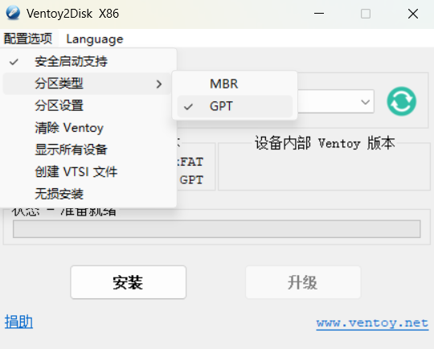
-
选择U盘，点击安装，然后将PVE的镜像复制进U盘
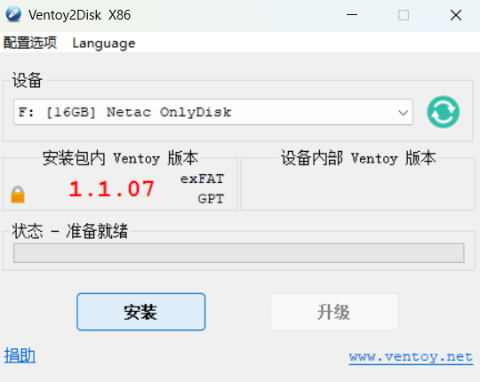
-
将U盘插在小主机的USB口上，连接好显示器，键鼠，同时用网线将小主机连接到能联网的路由器上
安装ProxmoxVE
开机连按F11进入BIOS，选择U盘
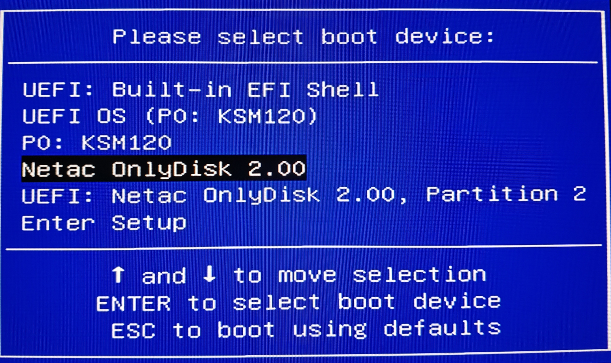
选择PVE的镜像
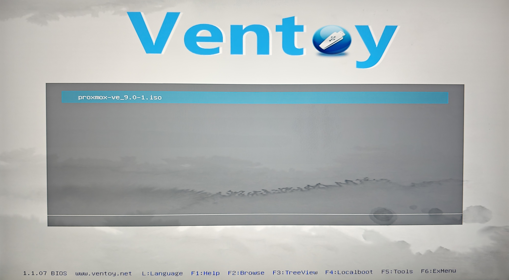
选择Install Proxmox VE (Graphical)
进入安装界面，选择I agree
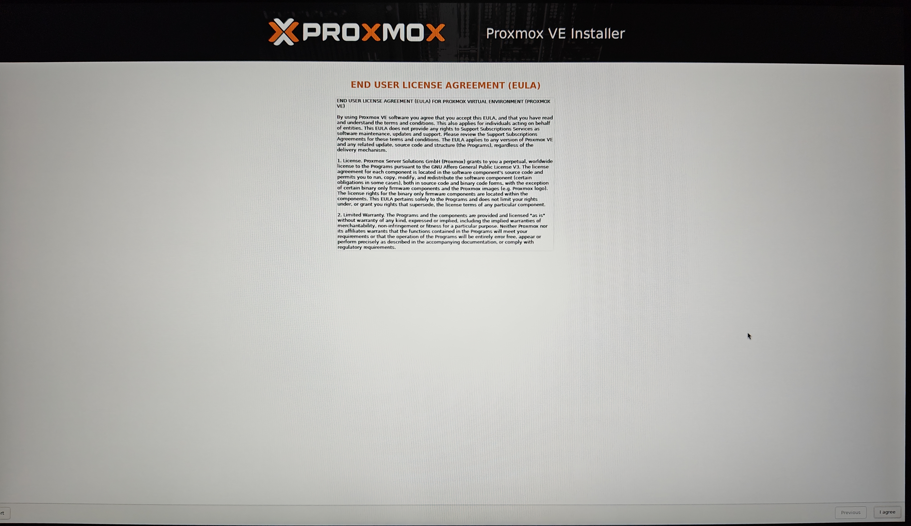
在下方选择系统盘，这一步会将硬盘格式化，注意备份数据
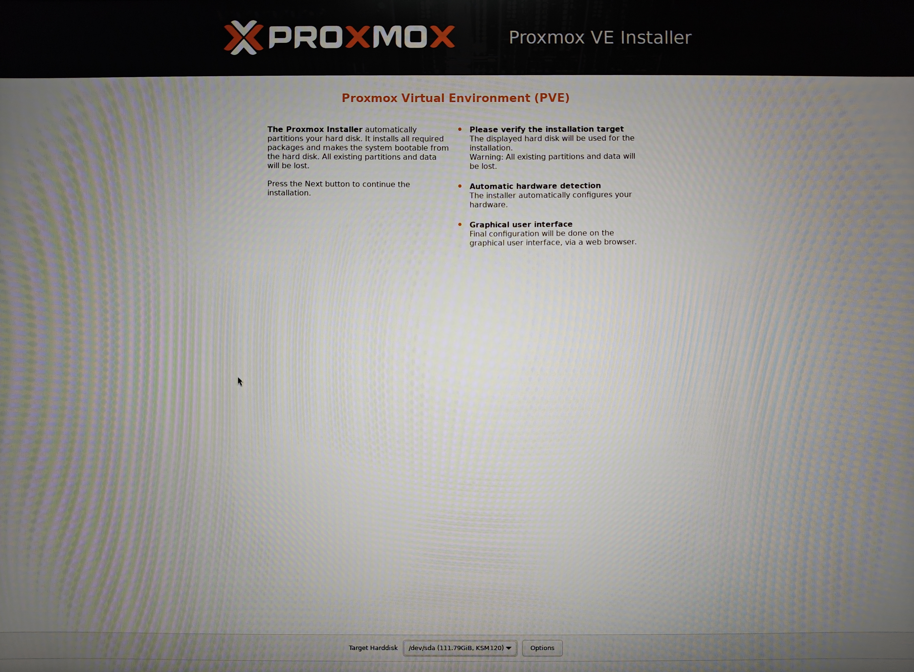
填写：
|
|
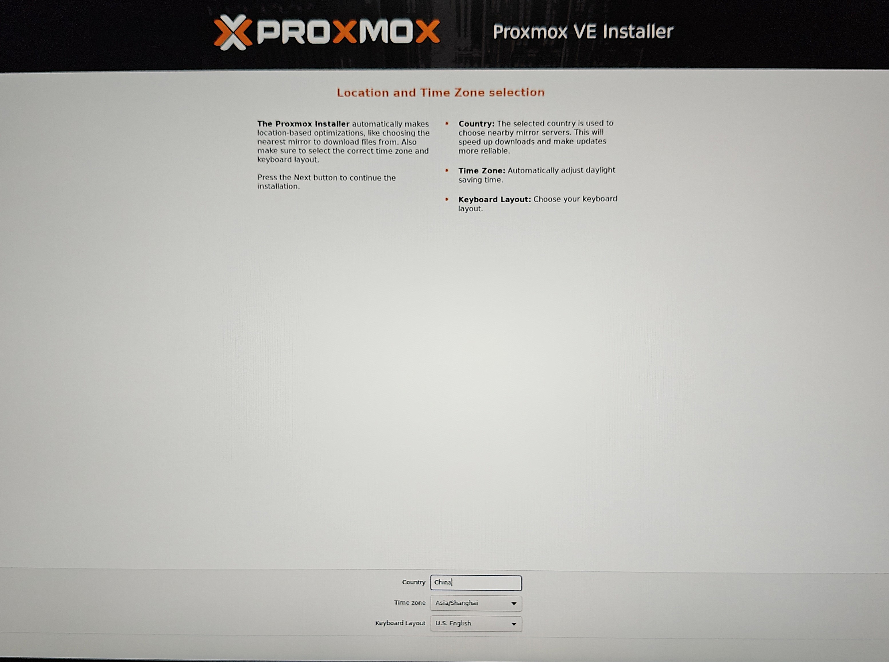
设置并确认PVE的密码，用于登录Web UI和连接SSH，填写自己的邮箱
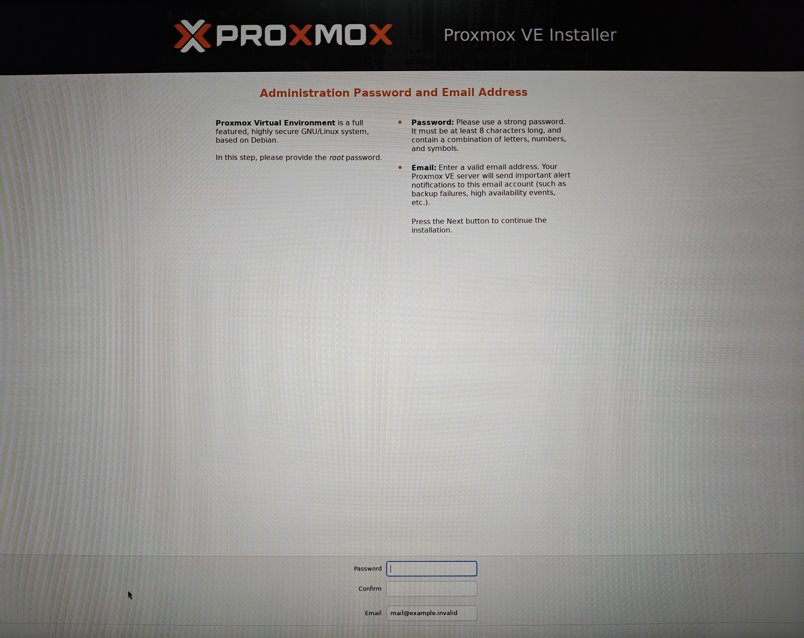
设置IP地址，默认会通过DHCP获取到一个地址，后续访问Web UI或者连接SSH需要用到
Management interface为用于管理pve的端口，建议设定在之后打算用作lan的网口
Hostname(FQDN)为当前小主机在局域网中的主机名，不要设置成现有的网站名字，我的是pve.j4125
IP Address(CIDR)为小主机的管理IP地址，安装完成后，这个地址会被设置成静态地址，修改起来比较麻烦，建议提前修改为想要的 IP 地址
Gateway为网关，连接路由器的情况下会自动填写
DNS Server为DNS服务器，可保持默认
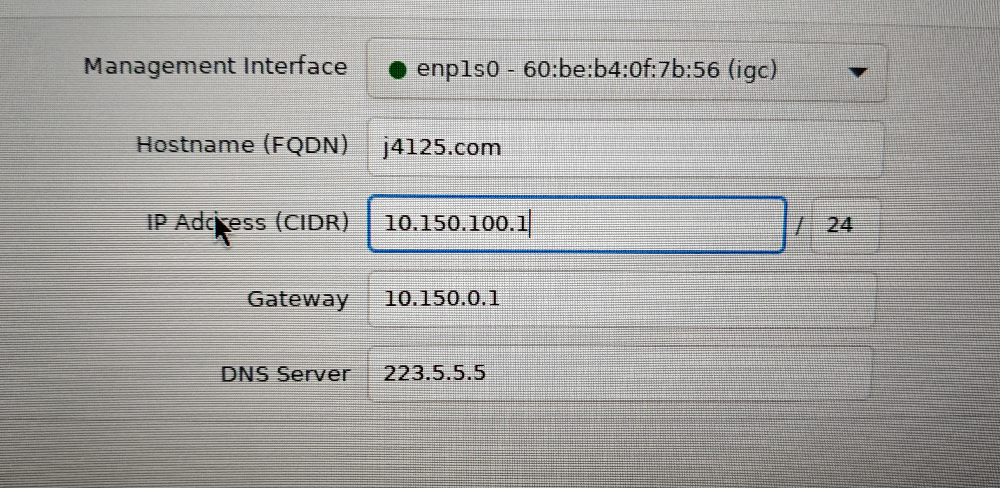
确认信息并安装，安装完成后会自动重启，这时拔下U盘，成功启动后进入系统命令行界面
最上方显示的IP为当前小主机PVE系统的管理网页地址。我的管理地址是https://10.150.15.100:8006。默认用户名为root，密码为上面安装过程中第四个界面设置的密码
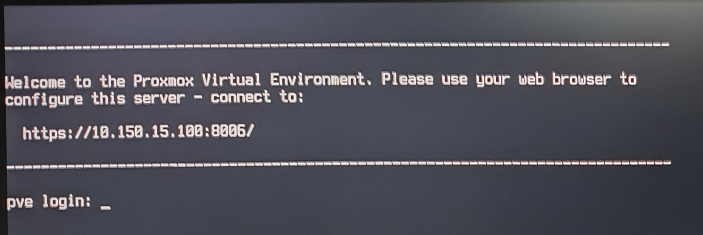
更换软件源
浏览器访问PVE管理地址，跳过安全提醒进入控制界面，若无法访问可尝试此方法
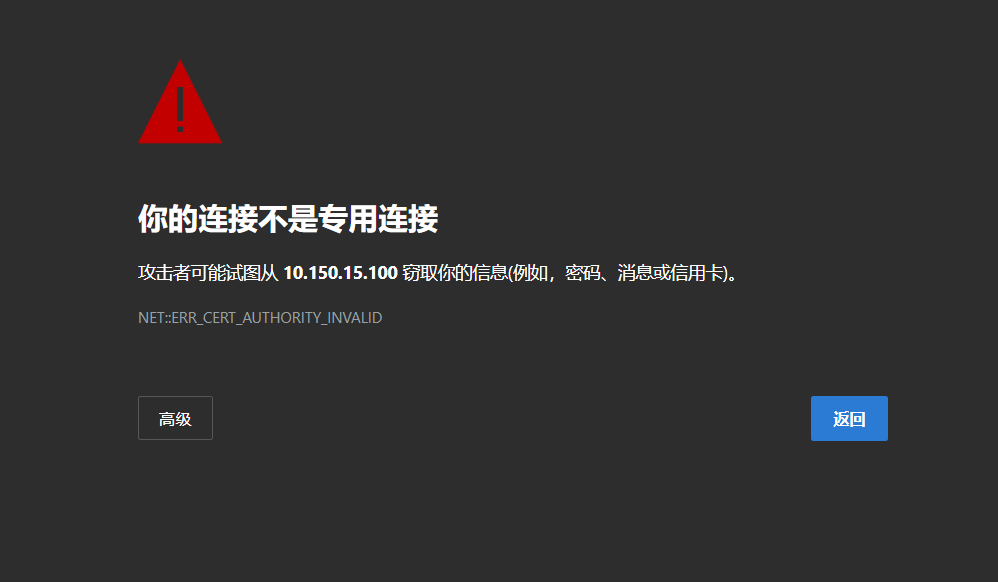
进入管理界面，修改语言为中文，登录账号为root，密码是安装时设置的密码
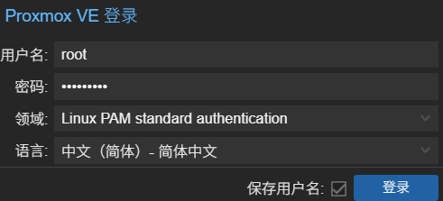
进入更新>存储库，禁用企业源/etc/apt/sources.list.d/ceph.sources和/etc/apt/sources.list.d/pve-enterprise.sources
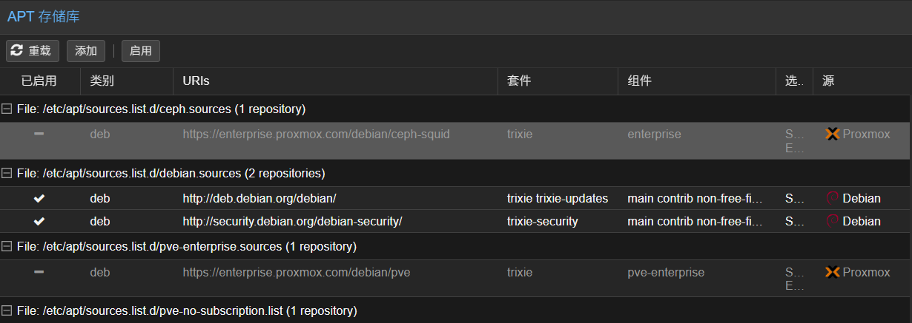
shell中输入下列命令
|
|
|
|
|
|
|
|
|
|
|
|
上层服务系统安装与配置
OpenWRT
黑群晖
曾经的失败尝试
路由器 OpenWRT 方案
最开始因为不熟悉校园网结构，打算先在路由器上刷 OpenWRT 学习。计划后续将软路由独立出来，让路由器只做 AP，最终选用 H3C NX30 Pro
准备
-
H3C NX30 Pro 路由器
-
有网口的 Windows 电脑
开启ssh
确保路由器是联网的，NX30 Pro 默认开启 telnet，默认的地址是 192.168.124.1，端口是 99
打开 Termius 选择New Host，Address 填写192.168.124.1，取消勾选SSH，勾选Telnet，Port 端口填写上99，用户名是H3C，密码为后台登录密码
意外情况：这款路由器2025年8月厂家安装了新版V100R009系统，封闭了telnet 99端口且无法降级，因此无法免拆刷机。由于更新时间较短，网上几乎无资料，我选择路由器的时候并没有发现这种情况，最终只能放弃该方案
附：管理界面无法进入的解决方法
将管理端口用网线连接到电脑网口，电脑进入控制面板>网络和 Internet>网络和共享中心，点击这里的以太网>属性>Internet协议版本4
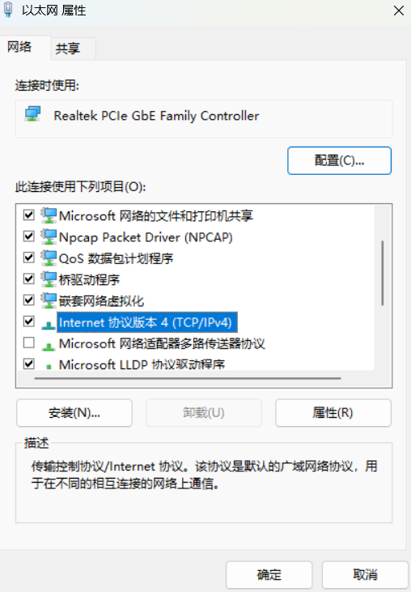
选择使用下面的IP地址，ip地址填写和管理IP同网段的任意地址，网关填写管理ip，其他和图片填写保持一致
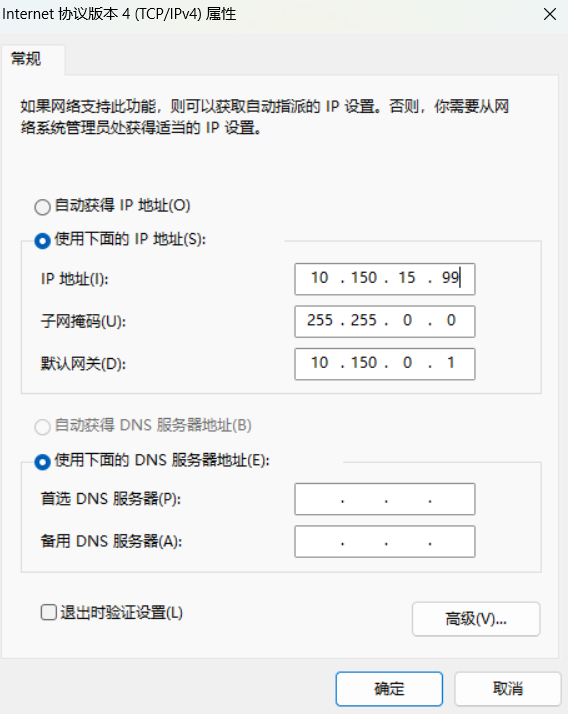
参考
超详细教程-J4125小主机从到手到安装PVE，iStoreOS作为主路由全过程小记(使用虚拟化) | 邮文的萤火屋
All in one入门之All in one和三种PVE、ESXI、Windows Server方案 - alittlemc